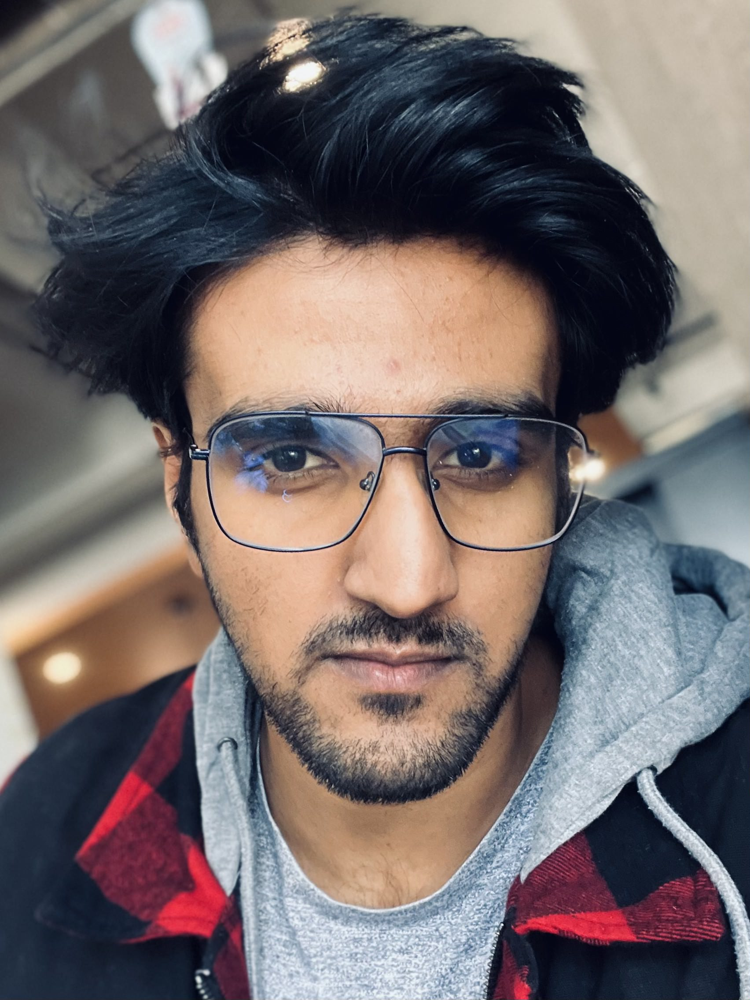

Kaifee Alhas

Personal Details
- Email: Kaifee@thedemonfox.com
- Phone: +91-9771403196
- Location: Gaya, Bihar, India
- Portfolio: www.thedemonfox.com
Summary
A Bachelor of Technology graduate in Mechanical Engineering turned Web Developer,
with a strong foundation in creating and managing web applications and services.
Possessing a proven ability to ensure projected architectural design, utilize modern
technology to provide end-to-end solutions, increase efficiency, and enhance the user
experience. Effectively working as a freelancer as well as a Senior Web Developer at
DigiHotshot since August 2019, I have demonstrated the ability to adapt, learn and
improve, showcasing my commitment to the field of web development.
WORK EXPERIENCE
Senior Web Developer | DigiHotshot
August 2019 - Present
- Leading a team of web developers, managing projects from conception to
delivery.
- Collaborating with clients and stakeholders to deliver high-quality web
applications
- Implementing UX/UI designs to increase user engagement and satisfaction.
- Testing and debugging code to ensure optimal functionality and user experience.
- Employing modern web technologies and frameworks to deliver top-notch web
services.
Freelance Web Developer | DemonFox
August 2019 - Present
- Working directly with clients to deliver custom web development projects on time
and within budget.
- Developing responsive and efficient code for web applications.
- Debugging and optimizing existing and new web applications.
- Maintaining ongoing communication with clients to ensure satisfaction and
discuss potential future projects.
- Training clients to manage their websites and troubleshoot minor issues.
EDUCATION
Bachelor of Technology in Mechanical Engineering | Madhav University
2014 - 2018
SKILLS
- Web Development: HTML, CSS, JavaScript.
- Database Management: MySQL, MongoDB.
- Version Control/Git.
- RESTful API development.
- Responsive and Mobile Design.
- Cross-Browser Development.
- Testing and Debugging.
- UX/UI Design.
- Problem Solving.
- Project Management.
LANGUAGES
- English
- Hindi
- Arabic (Basic)